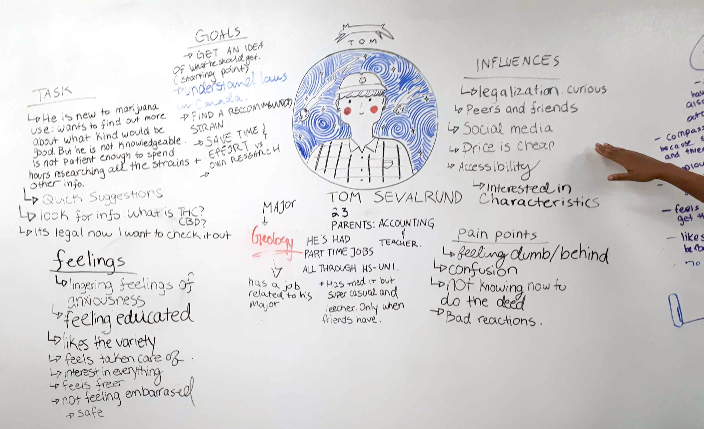
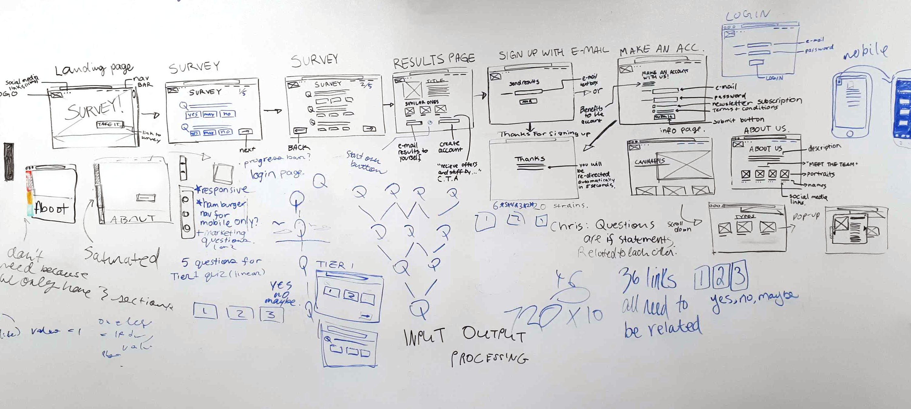
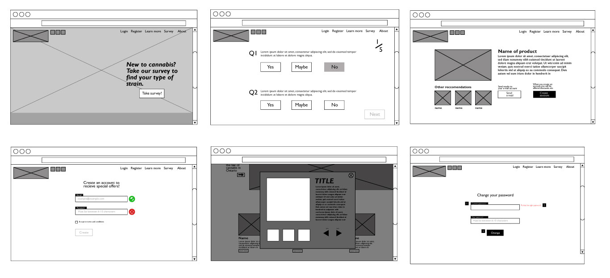

CustomHighze
UX/UI
ROLE
UI Design, Wireframing, Userflows
TOOLS
Adobe Illustrator, Pen + Paper, Whiteboard, CSS3, HTML5, Javascript
DURATION
4 weeks
SUMMARY
CustomHighze is a collaborative project that helps the user find the most appropriate cannabis strain for them, based on their answers to the survey provided. We thought about this idea when we knew that recreational use of cannabis was going to be legal in Ontario.
THE PROBLEM
There are over approximately 700 known cannabis strains in the world. This is an overwhelming large number. With so many varieties, it will be difficult for new users to understand and know which strains are the right ones for them.
THE SOLUTION
As a group, we developed the idea to create a survey that is dedicated to providing the most fitting strain for the user, based on their answers. The web application also provides basic information on strains, accessories and a link which leads to the official Ontario government website about cannabis use. This is because our primary demographic aim is users that are new/super casual.
THE PROCESS
1. Emphasize with the user
2. Structure
3. UI Designs
4. Test
In the beginning
PHASE 1: EMPATHY MAP
We then created an empathy map in order to understand our user better. By doing this, we had a solid understanding of who we were designing for and what to look out for such as the pain points. This became a guide on how we should design our web app. This also helped the team further flesh out our web app idea.
PHASE 2: USER FLOW
A userflow was then created after collaborating with my team members. For marketing purposes, the user can sign up for an account in order to be eligible for special offers such as discounts to local dispensaries. They can also send themselves their results in order to remember for next time, if they would like to try out the strain.
The structure
PHASE 3: Wireframes
then created a user flow of the shopping experience. This online store would have two shopping experiences: the 3D house and the regular shopping option. This is so if the user is not interested in the 3D house, they can still shop regularly.
 PHASE 4: UI DESIGNS
I then worked with a fellow design team member to finalize and create the mock up designs. We chose to go with a dominant red color and modern feel in order to stray away from the traditional and formal look. We did not want our application to look bland since we found that most cannabis users are in their 20-30s. We wanted to appeal to that demographic.

In the end
THE STUMBLES
One of the problems we faced was definitely time. Everyone in our group except for one, had no experience in web development prior to entering this program. Although we had many ideas we wanted to include in the beginning, some of it had to be cut out. One of them was the tier 2 version of the survey. We later realized that the creation of the survey took longer than expected, as well as the CSS of the website, due to most of us being inexperienced. From this experience, we definitely learned a lot about web development.
SOME USER FEEDBACK
After the final designs were done, we went around Sheridan College and asked students if they would like to participate in our user testing. It was important for us to test this, in order to gain insights on our design. We asked them how the interface felt and gave them tasks to complete.
- Half of the users experienced difficulty reading the content due to contrast and color
- A few expressed confusion on the survey questions and their relevance to the recommended strains
- Some also showed appreciation for the modern look and told us that they judge a website by how it looks; they would be less likely to continue staying on a web app if it looked boring or old

LEARNED OUTCOMES
From the completion of this project, we now understand how long this process can take. We will now be more ready to tackle the next website project! We learned that it is important to make sure that the colors used - especially for text, are clearly legible and are accessible for color blindness.